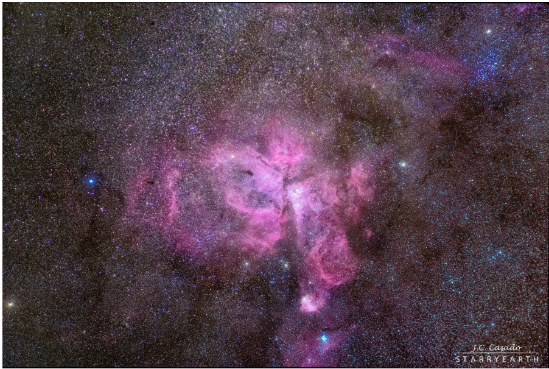
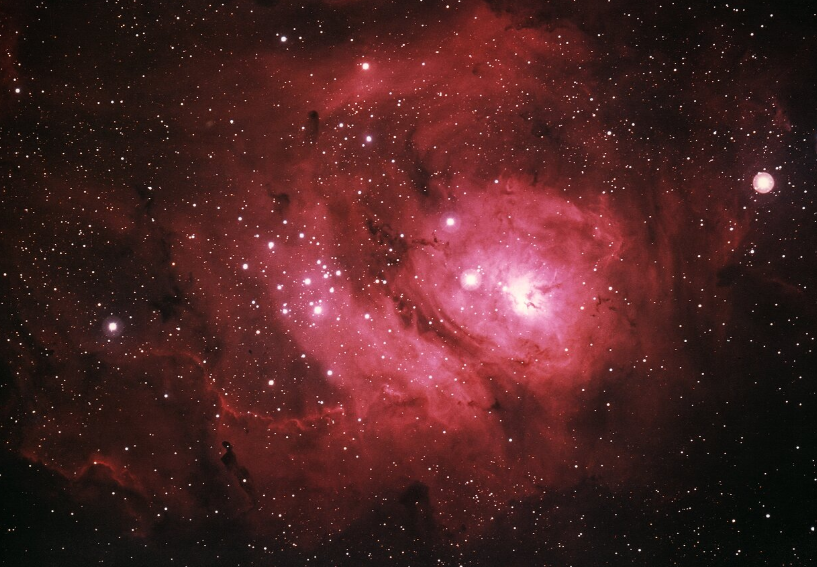
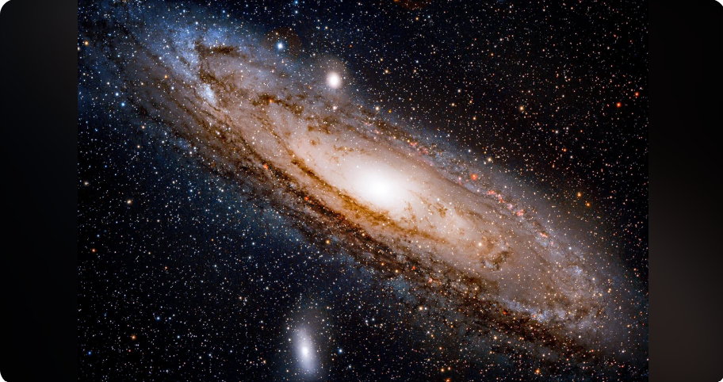

| 天体名 | 名称 | 画像 | 解説 |
|---|---|---|---|
| NGC3372 | イータ カリーナ星雲 |
 |
りゅうこつ座にある散光星雲です。 南半球にある天体で日本では 沖縄以南でしか見ることができません。 |
| M8 NGC6523 |
干潟星雲 |  |
いて座にある散光星雲です。 夏を代表する天体です。 |
| M31 NGC224 |
アンドロメダ銀河 |  |
アンドロメダ座にある渦巻銀河です。 肉眼で見える最も遠い天体 だといわれています。 |